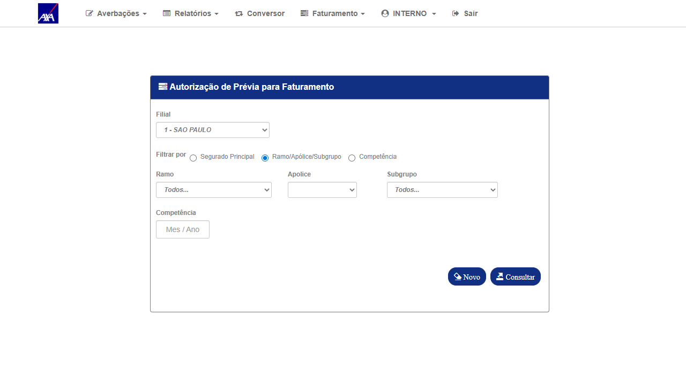
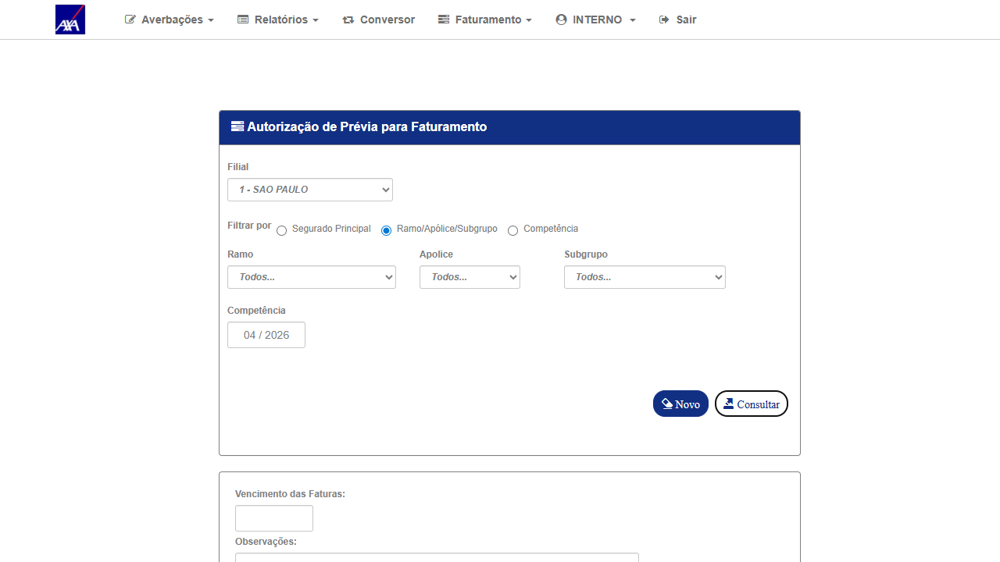
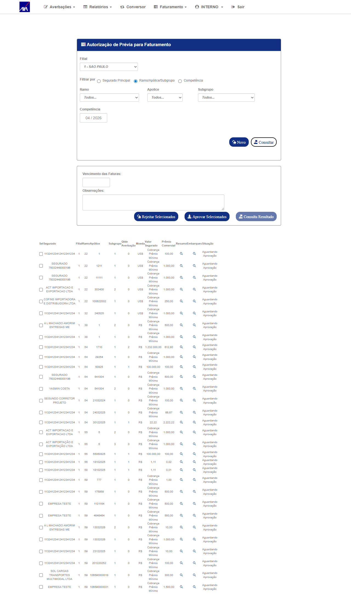
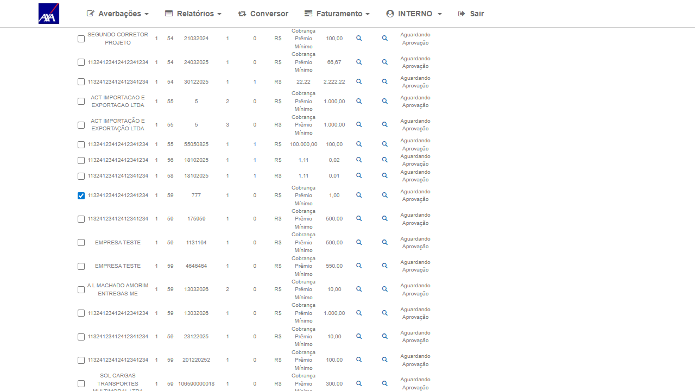
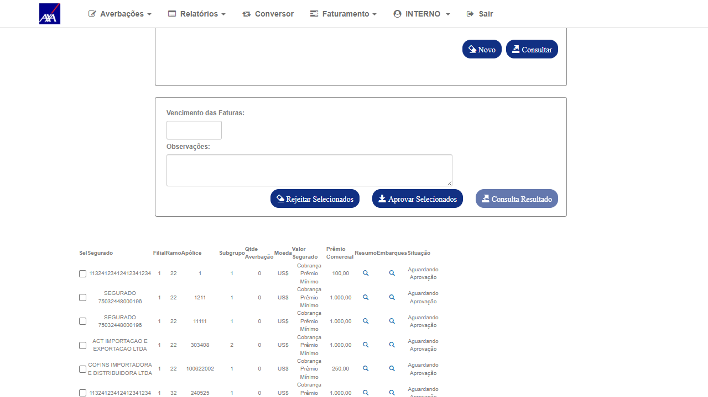
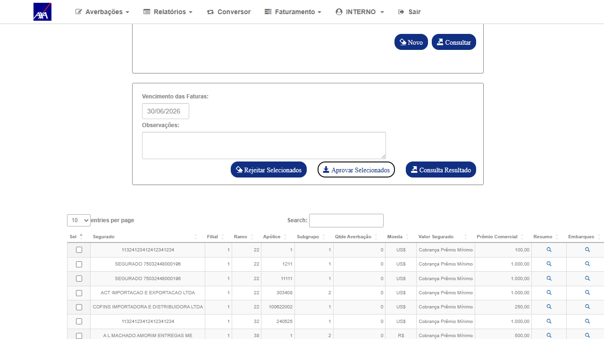
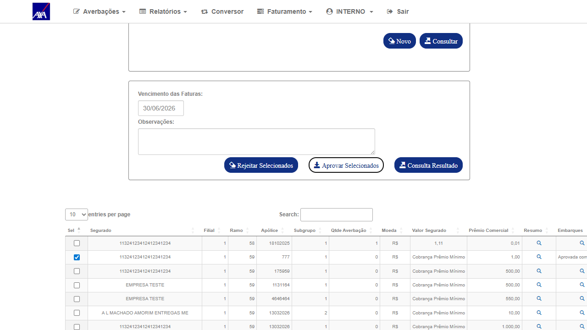
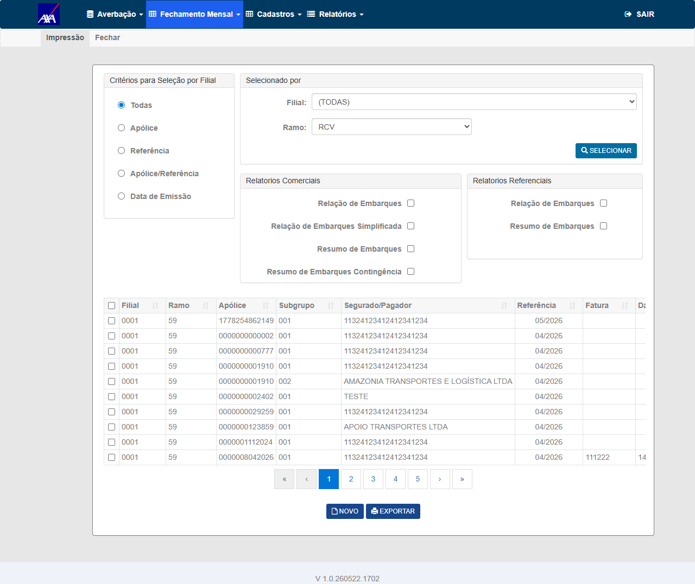
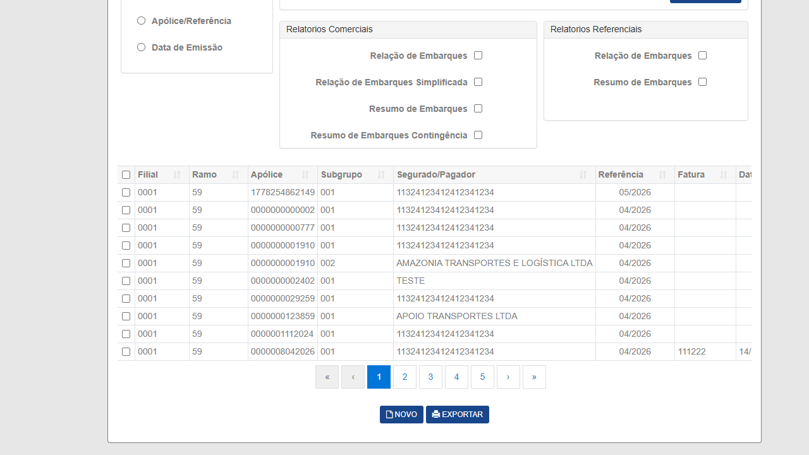

1. Identificação
Card
BUG-6927
Sprint
Sprint_6_Citweb — Sustentação
Seguradora
AXA
Módulo
CITNET — Faturamento / Aprovação
Dev responsável
—
Autor / Data
Wesley Moreira · 22/05/2026
2. Descrição
O campo n_usu_ems é gravado na base de dados quando uma prévia é aprovada no CITNET. Esse campo identifica qual sistema realizou a emissão e é exibido na coluna "Usuário de Inclusão" no grid de Impressão do CITWEB (Fechamento Mensal → Impressão).
Bug original
Nos métodos
EfetuarFechamentoNacCORRETOR (~linha 256) e EfetuarFechamentoIntCORRETOR (~linha 752) do FechamentoFaturaController.cs, o campo usuario estava hardcoded como "CITNETL" (com "L" extra). Isso fazia com que o campo n_usu_ems fosse gravado incorretamente.
Correção aplicada
Adicionada lógica condicional com a flag
Ind_Param_Geral (específica da AXA): quando ativa, força usuario = "CITNET" na gravação. A correção se aplica a todos os usuários que acionam o faturamento via CITNET — não apenas ao perfil CORRETOR.
Campo invisível no CITNET
O campo
n_usu_ems não é exibido em nenhuma tela do CITNET. A verificação deve ser feita exclusivamente no CITWEB → Fechamento Mensal → Impressão → coluna "Usuário de Inclusão" no grid de resultados.
3. Escopo
In Scope
- Aprovação de prévia no CITNET AXA por usuário com perfil Gestor (SSO via CITWEB)
- Verificação do campo "Usuário de Inclusão" = "CITNET" no grid de Impressão do CITWEB
- Confirmação de que o valor gravado é "CITNET" (e não "CITNETL")
- Regressão: demais registros no grid não foram alterados
- Ramo RCV (59) — AXA HML
Out of Scope
- Outras seguradoras (flag Ind_Param_Geral é exclusiva da AXA)
- Aprovação com perfil CORRETOR (usuário gestor é suficiente)
- Campo n_usu_ems em operações internacionais
- Testes de performance/carga
4. Pré-requisitos
✅ Ambiente e massa confirmados via Playwright MCP (22/05/2026)
AXA HML CITWEB acessível: login FRED/DERF ✅
AXA HML CITNET acessível: acesso via SSO (botão CITNET no menu do CITWEB) ✅
Apólice 777 · Ramo 59 · Filial 1 · Competência 04/2026 — 31 prévias disponíveis ✅
Flag
AXA HML CITNET acessível: acesso via SSO (botão CITNET no menu do CITWEB) ✅
Apólice 777 · Ramo 59 · Filial 1 · Competência 04/2026 — 31 prévias disponíveis ✅
Flag
Ind_Param_Geral ativa no ambiente AXA HML ✅
| Item | Detalhe |
|---|---|
| Ambiente | HML AXA — axa-hml-faturamento.nsseg.com.br |
| Credenciais CITWEB | FRED / •••••• (senha no .env) |
| Credenciais CITNET | SSO via botão "CITNET" no menu CITWEB (FRED precisa ter email vinculado) ou interno / 11 diretamente |
| Apólice de teste | 777 · Ramo 59 · Filial 1 · Subgrupo 001 · Competência 04/2026 |
| Flag Ind_Param_Geral | Deve estar ativa no ambiente AXA HML para acionar a correção |
| Verificação | CITWEB → Fechamento Mensal → Impressão → Ramo: RCV → Selecionar |
5. Casos de Teste
Grupo 1 — Fluxo de Aprovação CITNET + Verificação CITWEB
CT-EMS-001
Gestor aprova prévia no CITNET AXA — verificar n_usu_ems = "CITNET" no CITWEB
P1 Bloqueante
Positivo
Passos — CITNET (Aprovação)
- Acessar CITWEB AXA HML como FRED / DERF
- No menu, clicar em CITNET para acesso via SSO
- No CITNET, navegar para Faturamento → Aprovação
- Preencher filtros: Ramo = Todos, Competência = 04/2026
- Clicar em Consultar
- Localizar apólice 777 (ramo 59, filial 1, subgrupo 001) e marcar o checkbox de seleção
- Preencher campo "Vencimento das Faturas" =
30/06/2026 - Clicar em "Aprovar Selecionados"
- Confirmar que a linha da apólice 777 exibe status "Aprovada com sucesso"
Passos — CITWEB (Verificação)
- Voltar ao CITWEB AXA HML (tab do menu principal)
- Navegar para Nacional → Fechamento Mensal → Impressão
- No filtro "Ramo", selecionar RCV
- Clicar em Selecionar
- No grid de resultados, localizar a linha com apólice 0000000000777
- Verificar a coluna "Usuário de Inclusão" para essa linha
Resultado esperadoAprovação concluída com sucesso no CITNET. Coluna "Usuário de Inclusão" do grid de Impressão exibe CITNET para a apólice 777 — confirmando que
n_usu_ems foi gravado corretamente (sem o "L" extra do bug original).
CT-EMS-002
Confirmar valor exato "CITNET" (não "CITNETL") na coluna Usuário de Inclusão
P1 Bloqueante
Negativo / Verificação
Passos
- No grid de Impressão (já filtrado por RCV), localizar linha com apólice 777
- Ler o valor exato da coluna "Usuário de Inclusão"
- Comparar: deve ser exatamente
CITNET(5 caracteres, sem "L" ao final) - Confirmar que o valor não é
CITNETL(valor do bug antes da correção)
Resultado esperadoO campo exibe exatamente "CITNET" — 6 letras, sem "L". O valor "CITNETL" (com L) não deve aparecer em nenhuma linha do grid para registros aprovados no CITNET após a correção.
Grupo 2 — Regressão
CT-EMS-003
Registros de outros usuários no grid Impressão não foram afetados pela correção
P3 Desejável
Regressão
Passos
- No grid de Impressão já filtrado por RCV, observar as demais linhas além da apólice 777
- Para registros não aprovados via CITNET (ex: apólice 1910, apólice 2402, apólice 123859), verificar a coluna "Usuário de Inclusão"
- Confirmar que esses registros mantêm seus valores originais (FRED, ITAMAR, etc.)
Resultado esperadoRegistros de outros usuários mantêm seus valores originais intactos no campo "Usuário de Inclusão". A correção não alterou registros pré-existentes nem afetou o comportamento de outros usuários do sistema.
6. Matriz de Rastreabilidade
| Critério de Aceite | CT(s) | Resultado |
|---|---|---|
Campo n_usu_ems gravado como "CITNET" para aprovações do CITNET (flag Ind_Param_Geral ativa) | CT-EMS-001, CT-EMS-002 | ✅ PASSOU |
| Valor "CITNETL" (bug original) não deve aparecer em registros aprovados após a correção | CT-EMS-002 | ✅ PASSOU |
| Outros registros do grid não foram afetados pela correção | CT-EMS-003 | ✅ PASSOU |
7. Métricas
3
Total de CTs
2
P1 Bloqueantes
0
P2 Importantes
1
P3 Desejáveis
8. Riscos
| Risco | Prob. | Impacto | Mitigação |
|---|---|---|---|
| ✅ | Baixa | Alto | Confirmado via execução: aprovação gravou "CITNET" corretamente |
| ✅ | Baixa | Alto | Acesso CITNET via interno/•••••• (senha no .env) ou login direto como alternativa |
| Prévia em competência anterior expirada/cancelada | Baixa | Baixo | Usar competência 04/2026 conforme massa confirmada |
9. Resultados da Execução
✅ Execução concluída — 22/05/2026 via Playwright MCP
Todos os 3 CTs executados em HML AXA. Aprovação realizada por gestor FRED (SSO via CITWEB → botão CITNET). Coluna "Usuário de Inclusão" = "CITNET" confirmada no grid de Impressão do CITWEB. Evidências capturadas em cada passo crítico.
3
Executados
3
Passaram
0
Falharam
0
Bloqueados
CT-EMS-001
Gestor aprova prévia no CITNET AXA — verificar n_usu_ems = "CITNET" no CITWEB
P1 Bloqueante
✅ PASSOU
Resultado obtido
CITNET: Apólice 777 (ramo 59, filial 1, subgrupo 001, competência 04/2026) aprovada com sucesso — NumeroFechamento = 44. Status exibido: "Aprovada com sucesso".
CITWEB: Grid de Impressão (Ramo = RCV) exibe linha com apólice 0000000000777, coluna "Usuário de Inclusão" = CITNET (data 22/05/2026 17:20:00, vencimento 30/06/2026).
CITWEB: Grid de Impressão (Ramo = RCV) exibe linha com apólice 0000000000777, coluna "Usuário de Inclusão" = CITNET (data 22/05/2026 17:20:00, vencimento 30/06/2026).
Evidências — CITNET Aprovação
aprovacao-01 — CITNET AXA: Tela inicial de Autorização de Prévia (Faturamento → Aprovação)

aprovacao-04 — Resultado da consulta: 04/2026 · Todos os ramos · 31 prévias aguardando aprovação

aprovacao-05 — Grid completo de prévias (inclui 10 registros ramo 59)

aprovacao-06 — Checkbox da apólice 777 (ramo 59, filial 1, subgrupo 001) marcado

aprovacao-07 — Botão "Aprovar Selecionados" visível após seleção

aprovacao-08 — Resultado após clicar em "Aprovar Selecionados"

aprovacao-11 — Apólice 777 confirmada como "Aprovada com sucesso" (NumeroFechamento = 44)

Evidências — CITWEB Verificação (Impressão)impressao-01 — Grid de Impressão filtrado por Ramo = RCV: todos os registros ramo 59

impressao-02 — Destaque: apólice 777 com "Usuário de Inclusão" = CITNET (célula em verde)

CT-EMS-002
Confirmar valor exato "CITNET" (não "CITNETL") na coluna Usuário de Inclusão
P1 Bloqueante
✅ PASSOU
Resultado obtido
Valor lido na célula: "CITNET" — exatamente 6 caracteres, sem "L" ao final. O valor "CITNETL" (7 caracteres, bug original) não está presente em nenhuma linha do grid para registros aprovados no CITNET na data 22/05/2026.
Evidências
impressao-02 — Valor "CITNET" destacado para apólice 777 (coluna "Usuário de Inclusão")
CT-EMS-003
Registros de outros usuários no grid Impressão não foram afetados pela correção
P3 Desejável
✅ PASSOU
Resultado obtido
Grid de Impressão (Ramo = RCV) mostra demais registros com seus usuários originais intactos: apólice 1910 → FRED, apólice 2402 → ITAMAR, apólice 123859 → ITAMAR, apólice 29259 → ITAMAR. A correção afetou exclusivamente registros aprovados via CITNET com flag Ind_Param_Geral ativa.
Evidências
impressao-01 — Grid completo RCV: demais registros com usuários FRED e ITAMAR preservados